Resumos de Geologia Regional
(região: Ibéria, mas na realidade apenas Portugal)
Escala de tempo geológico
-
éons (+ recente para + antigo)
- Fanerozóico
- Proterozóico
- Arcaico
- Hádico
Os últimos 3 são agrupados no grupo “Pré-Câmbrico” (ou Precâmbrico), pois ocorrem antes do período Câmbrico.
-
eras do Fanerozóico (+ recente para + antigo)
- Cenozóico, que corresponde à anterior era terciária + quaternária
- Mesozóico, que corresponde à era secundária
- Paleozóico, que corresponde à era primária
Escala de tempo simplificada
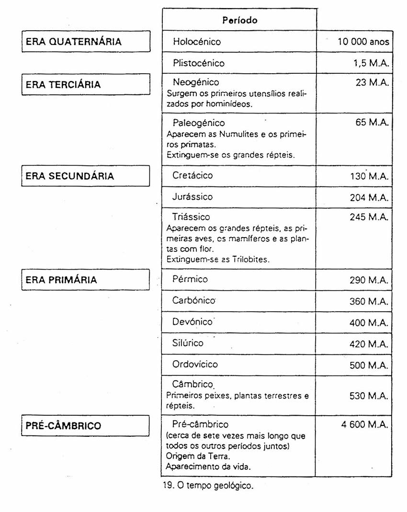Escala de tempo: https://stratigraphy.org/chart

períodos da era Paleozóica
idades: 540 a 252 Ma do mais antigo para mais recente:- Câmbrico
O Cambriano marcou um boom na evolução em um evento conhecido como explosão Cambriana, no qual o maior número de criaturas evoluiu em um único período da história da Terra. Criaturas como algas evoluíram, mas as mais comuns desse período foram os artrópodes com armaduras, como os trilobitas. Quase todos os filos marinhos evoluíram nesse período. Durante esse tempo, o supercontinente Pannotia começou a se fragmentar, resultando em grande parte no supercontinente Gondwana. A fragmentação de Pannotia começou com a abertura do Oceano Jápeto e outros mares cambrianos, coincidindo com uma elevação dramática do nível do mar. Estudos paleoclimáticos e evidências de geleiras indicam que a África Central estava muito provavelmente nas regiões polares durante o início do Paleozoico. - Ordovícico
- Silúrico
- Devónico
- Carbónico (ou Carbonífero ou Pensilvânico)
- Pérmico
O Permiano durou de 299 a 252 milhões de anos atrás e foi o último período da Era Paleozóica. No início desse período, todos os continentes se uniram para formar o supercontinente Pangeia, que era cercado por um oceano chamado Panthalassa. A massa de terra era muito seca durante esse tempo, com estações rigorosas, já que o clima do interior de Pangeia não era regulado por grandes corpos d'água. Diapsídeos e sinapsídeos floresceram no novo clima seco. Criaturas como Dimetrodon e Edaphosaurus dominavam o novo continente. Os primeiros coníferos evoluíram e dominaram a paisagem terrestre. Perto do final do Permiano, no entanto, Pangeia tornou-se ainda mais seca. O interior era um deserto, e novos táxons como Scutosaurus e Gorgonopsídeos o preencheram. Eventualmente, eles desapareceram, junto com 95% de toda a vida na Terra, em uma catástrofe conhecida como "A Grande Morte", a terceira e mais severa extinção em massa do Fanerozoico.
mnemónica “CUS DeCéPcionantes”
períodos da era Mesozóica
idades: 252 a 66 Ma do mais antigo para mais recente:- Triásico
- Jurássico
- Cretácico
períodos da era Cenozóica
idades: 66 Ma a presente do mais antigo para mais recente:- Paleogénico
- Neogénico
- Quaternário, anterior “era quaternária”
Distribuição atual das placas litosféricas
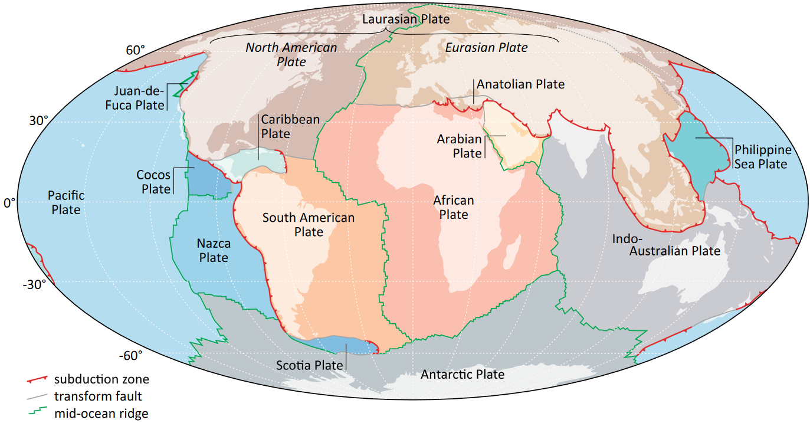Ciclo dos supercontinentes
Fecho de um supercontinente e desenvolvimento de outro(mais antigo para mais recente)
- Rodínia
- Panótia
- Pangeia
- Laurásia e Gondwana
- presente...
Ciclos de Wilson/orogénicos
Abertura e fecho de uma bacia oceânica individual, que ao fechar cria um orógeno-
Extensão Inicial Pré-Deriva (Initial Pre-Drift Extension)
Descrição: Esta fase marca o início do ciclo, onde as forças tectônicas começam a estender a crosta continental, criando fissuras e vales de rifte.
Exemplo: O Vale do Rift na África Oriental é um exemplo de uma área onde a extensão pré-deriva está ocorrendo. -
Fase de Rift-to-Drift, Abertura Inicial de uma Bacia Oceânica (Rift-to-Drift Phase, Initial Opening
of an Oceanic Basin)
Descrição: Durante esta fase, a crosta continental se rompe completamente, formando um novo oceano. Este é o começo da expansão do oceano.
Exemplo: O Mar Vermelho é um exemplo de um oceano formado pela fase de rift-to-drift. -
Espalhamento do Assoalho Oceânico, Alargamento da Bacia (Seafloor Spreading, Widening of the Basin)
Descrição: Ocorre a formação de nova crosta oceânica ao longo das dorsais oceânicas, resultando no alargamento da bacia oceânica.
Exemplo: O Oceano Atlântico está em fase de alargamento devido ao espalhamento do assoalho oceânico. -
Subducção da Litosfera Oceânica, Fechamento da Bacia (Subduction of Oceanic Lithosphere, Closure of
the Basin)
Descrição: A crosta oceânica mais antiga é forçada para baixo das placas tectônicas adjacentes, levando ao fechamento da bacia oceânica.
Exemplo: O fechamento do Oceano de Tethys foi causado pela subducção da litosfera oceânica. -
Colisão Continente-Continente (Continent-Continent Collision)
Descrição: As massas continentais colidem devido ao movimento das placas tectônicas, resultando na formação de grandes cadeias de montanhas.
Exemplo: A colisão entre a Índia e a Ásia deu origem à formação do Himalaia.
Evolução da tectónica de placas global após a fragmentação da Rodínia
Ib = Ibéria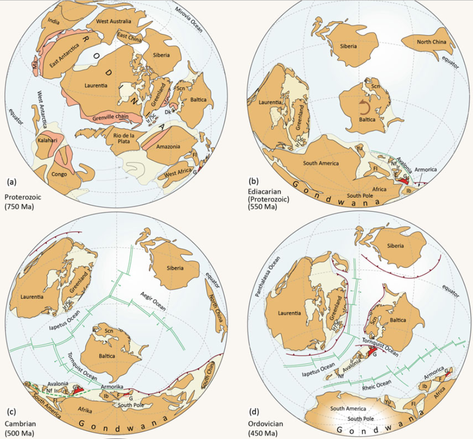 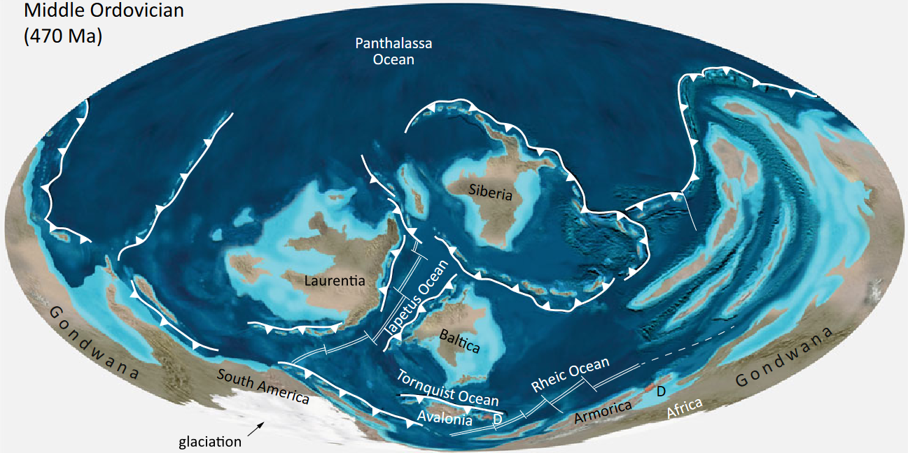 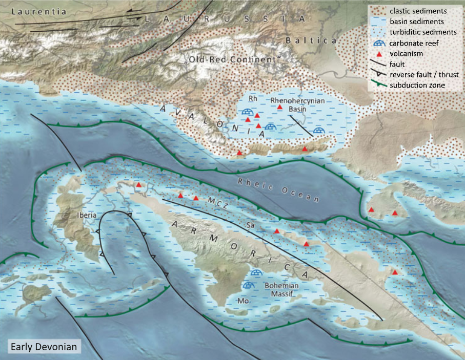 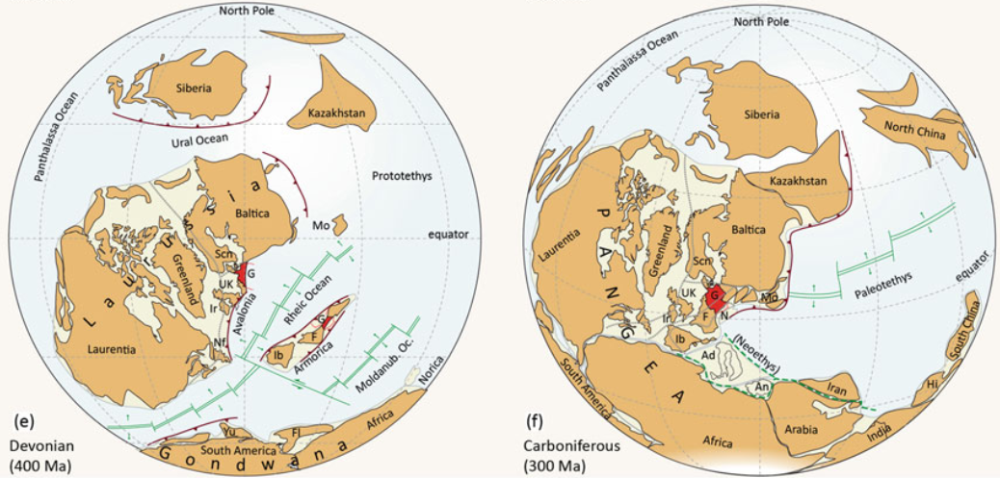 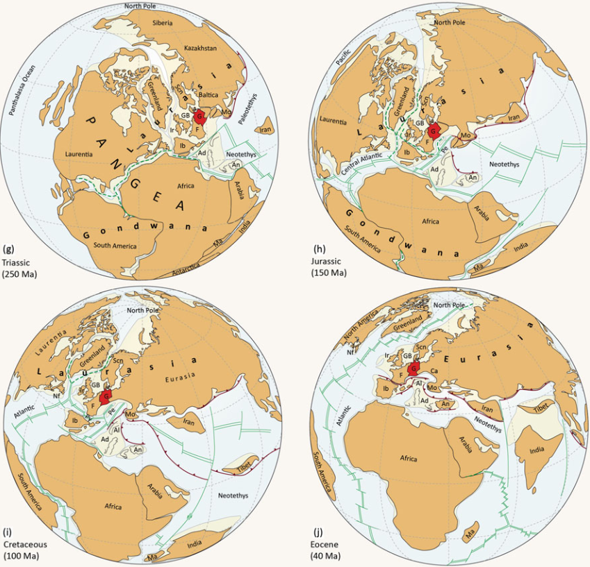
a G (Alemanha) está a vermelho porque tirei isto de um livro sobre a Alemanha
Ad Adriatic-Apulian Plate, Al Alps, An Anatolian Plate, Ca Carpathians, Dk Denmark, E England, F France, Fl Florida, G Germany, GB Great Britain, Ib Iberia, Ir Ireland, Pe Penninic Ocean, Ma Madagascar, Mo Moesia (presently Romania), N Norica, Nf Newfoundland, Py Pyrenees Ocean, Sc Scotland, Scn Scandinavia, Yu Yucatán
Províncias geológicas atuais
- Escudos
- Plataformas (carbonadas)
- Orógenos:
- arco insular/arco de ilhas = island arc
- arco continental (vulcânico) = continental arc
- antearco = forearc
- Bacias:
- cratónica = cratonic
- de ante-país/de frente-de-arco = foreland basin
- Grandes Províncias Ígneas
- Crusta extendida:
- Margem passiva
- Rift
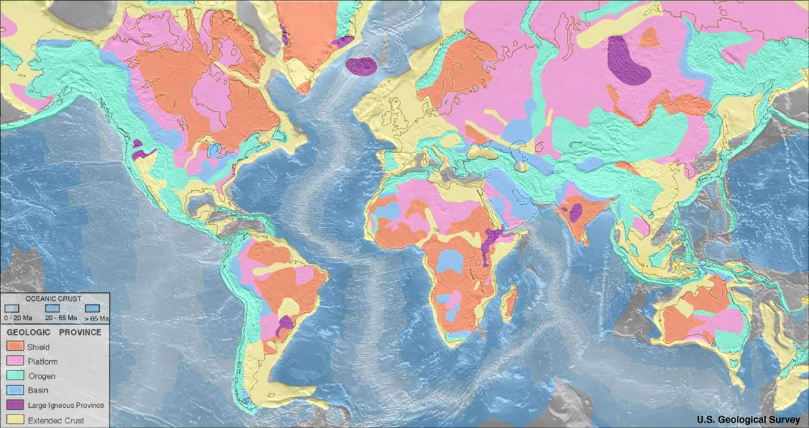
Ciclos de Wilson na Europa
*Os mais recentes que afetaram a Península Ibérica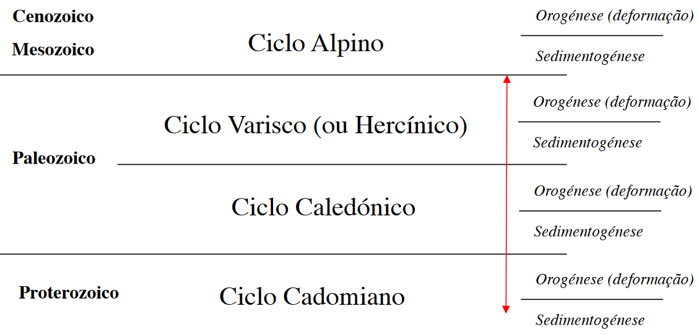
O ciclo caledónico tem pouca/nenhuma expressão em Portugal. A seta a vermelho são so ciclos pré-mesozóicos.
Cartas geológicas de Portugal (CGPs)
- 1: 1M
- 1:500k, 2 folhas (N e S)
-
1: 200k, 8 folhas
folha 1
folha 2
folha 8 -
1: 50k, muitas folhas...
folha 5D Braga
folha 27A Ourém
folha 38B Setúbal
Península Ibérica - unidades geológicas
- Maciço Ibérico (MI), Hespérico ou Antigo
- Cordilheiras alpinas/ Sistemas alpinos
- cordilheira Bética/sistema Bético
- Ibérica
- Pirenaica/Pirinéus
- Cantábrica
- Central
- Costeiro-Catalã
- Bacias meso-cenozóicas
Também denominadas por Orlas em Portugal
- Orla oeste/ocidental = bacia Lusitânica
- Orla sul/meridional = bacia Algarvia
- Bacias cenozóicas
- apenas em Espanha
- do Ebro
- Alto Tejo
- Guadalquivir
- Portugal e Espanha
- Douro
- Mondego (BM)
- Guadiana
- Baixo Tejo e Sado/Alvalade (BBT)
- Algarvia
reparar que a bacia do Algarve aparece listada como bacia cenozóica e meso-cenozóica - apenas em Espanha
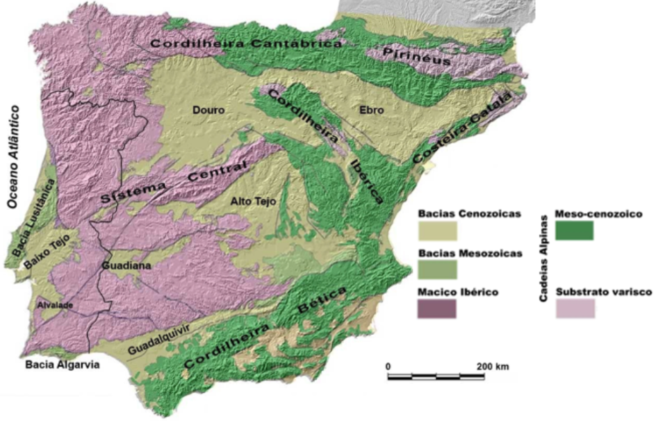 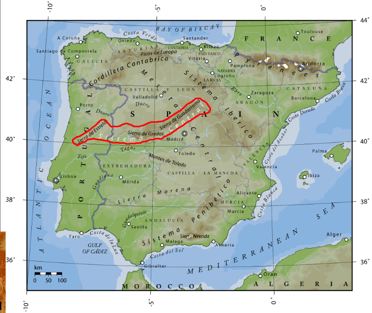 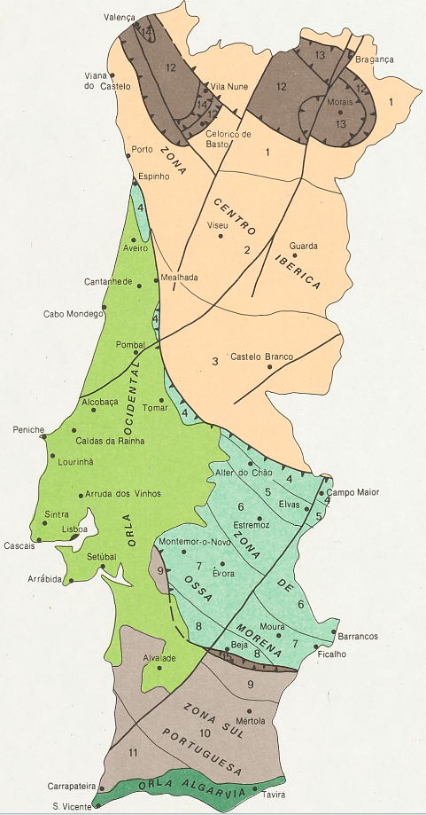 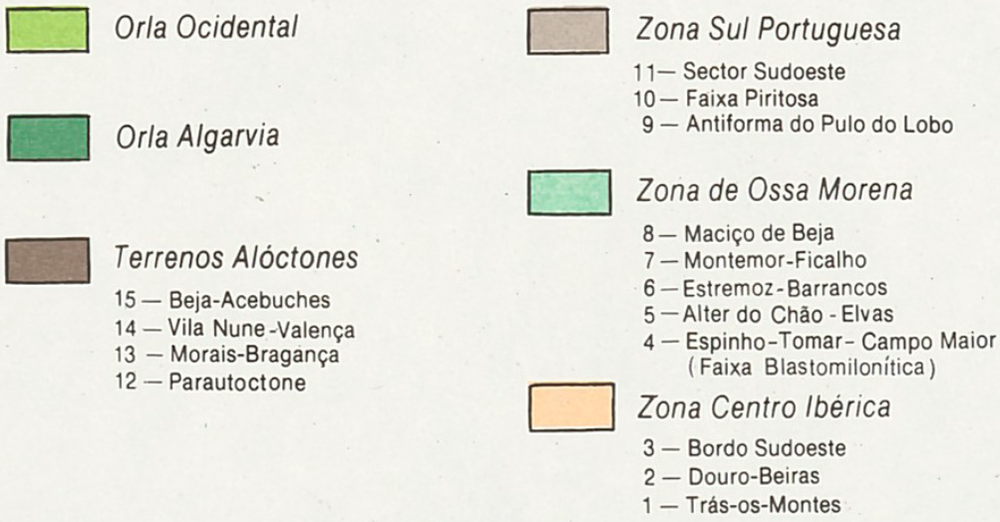
Maciço Ibérico
-
associado ao ciclo cadomiano e ao ciclo varisco. Como o principal e o último ciclo a formá-lo foi o
varisco, diz-se que o MI forma um Soco Varisco
As rochas que se formaram no ciclo varisco/hercínico correspondem à cordilheira (um conjunto de montanhas relacionadas geologicamente) formada como resultado da colisão da Laurásia com a Gondwana durante o Paleozóico -
As rochas predominantes são os granitos, os xistos e os afloramentos de cristas de quartzo
(quartzíticos).
É composto por formações com idades compreendidas entre o Proterozóico e o Carbonífero, variavelmente deformadas e metamorfizadas durante a orogenia varisca e intruídas por enormes volumes de magmas graníticos (batólitos) durante as fases finais da mesma orogenia.
Zonamento
- apenas em Espanha
- Zona Cantábrica
- Zona Asturocidental-Leonesa
- em Portugal e Espanha
- Zona Centro-Ibérica (ZCI)
- Zona Galiza-Trás-Os-Montes (ZGTM)
- Zona de Ossa Morena (ZOM)
- Zona Sul-Portuguesa (ZSP)
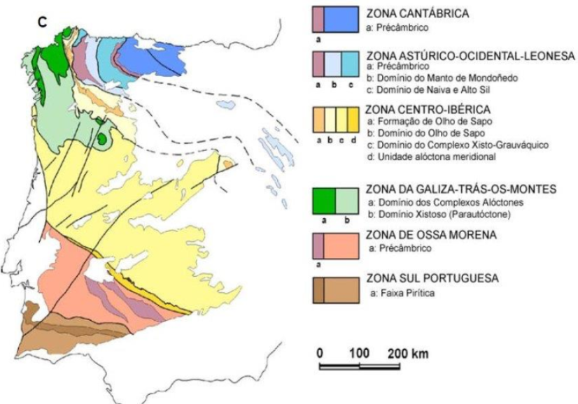
ciclo Varisco/Hercínico
- fase de sedimentogénese
fragmentação de um supercontinente, com abertura de oceanos. Os oceanos que abriram foram o Jápeto e o Rheic - fase de orogénese
colisão de blocos e formação de um supercontinente, com consequente fecho de oceanos. O Rheic fechou nesta altura.
cronologia
- 540 Ma: formação do oceano Jápeto entre a Laurência e a Gondwana.
- 460 Ma: formação do oceano Rheic que separa Avalônia-Carolina (A-C) da Gondwana.
- 370 Ma: colisão de Laurência, Báltica e Avalônia-Carolina que forma Laurússia.
- 280 Ma: fecho do oceano Rheic, que forma a Pangeia e ambos os orógenos da orogenia Varisca e da orogenia Ouachita-Alleghaniana.
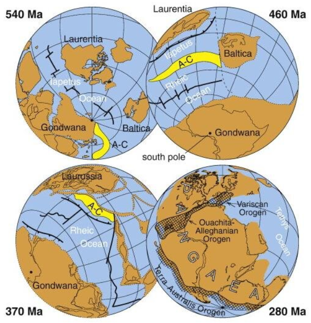
ciclo Alpino
- sedimentogénese
no Pérmico (final do Paleozóico), a Pangeia fragmenta-se, o que leva á formação/abertura de dois oceanos - o o Atlântico Norte (entre as placas Norte-americana e Euroasiática) e o paleo-oceano Tétis (entre as placas Africana e Euroasiática) - orogénese
O Tétis já fechou mas o Atlântico Norte não (obviamente)...
Durante a era Mesozóica, o mar de Tétis era um vasto oceano que separava os supercontinentes de Gondwana ao sul e Laurásia ao norte. À medida que o supercontinente Pangeia começou a se fragmentar, o mar de Tétis começou a se estreitar/fragmentar também. Partes dele foram fechadas e outras foram levantadas para formar cadeias de montanhas. No período Mioceno (~23 - 5 Ma), as partes remanescentes do mar de Tétis evoluíram para vários mares e bacias menores, entre as quais a Bacia do Mediterrâneo. Por volta de 5,96 a 5,33 Ma, o mar Mediterrâneo experimentou a Crise de Salinidade Messiniana, durante a qual quase secou devido ao fecho do Estreito de Gibraltar. Quando o estreito reabriu, a bacia se encheu novamente com água do Oceano Atlântico.
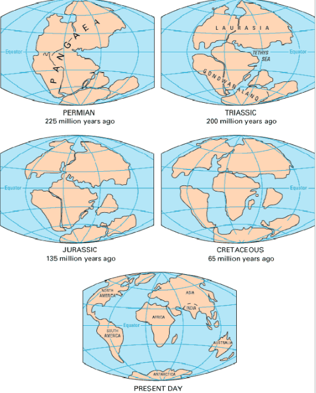
Idades da Europa
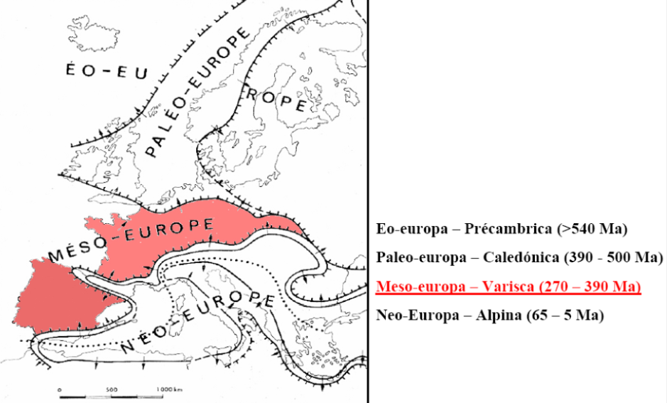